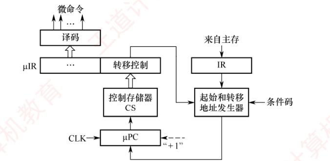
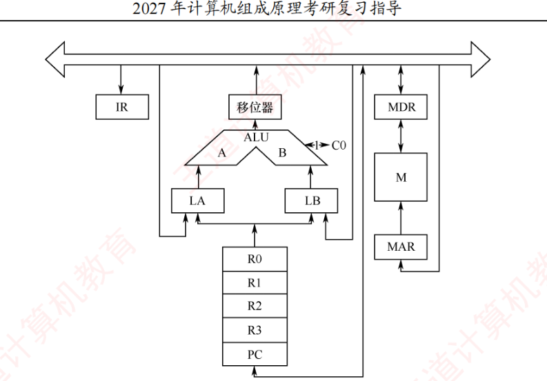
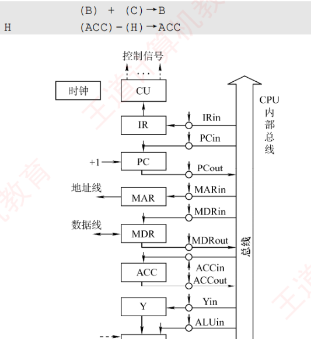
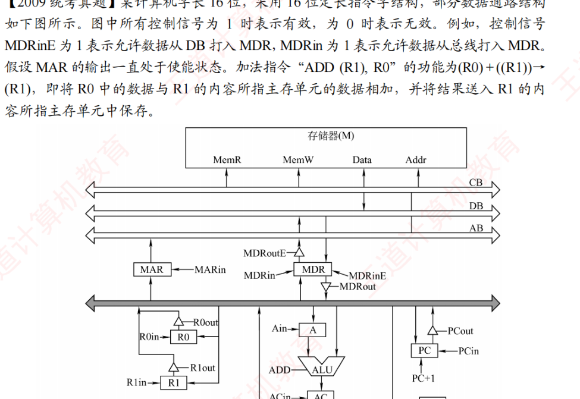
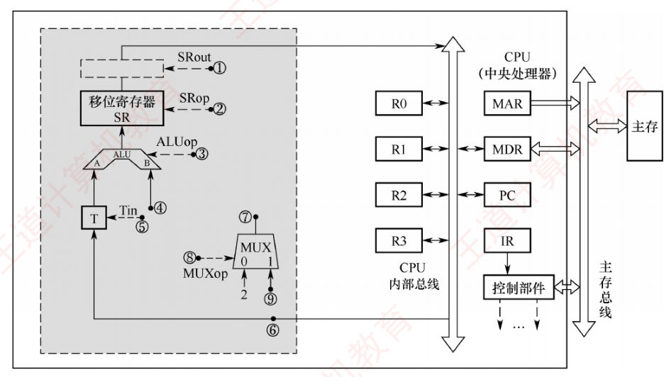
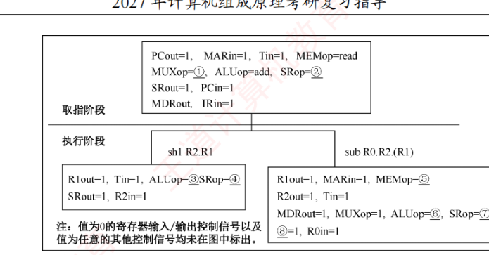
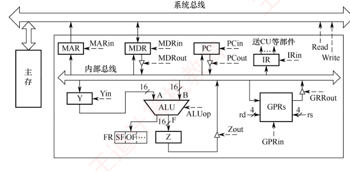
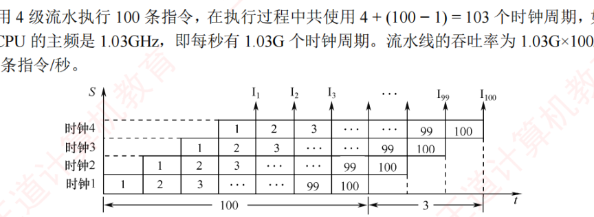

第5章 习题精选
本页共 39 题：选择题 30 道（第 1～4 题出自 5.1 CPU 的功能和基本结构，第 5～6 题出自 5.2 指令执行过程，第 7～11 题出自 5.3 数据通路的功能和基本结构，第 12～17 题出自 5.4 控制器的功能和工作原理，第 18～21 题出自 5.5 异常和中断机制，第 22～28 题出自 5.6 指令流水线，第 29～30 题出自 5.7 多处理器的基本概念），综合题 9 道（第 31～39 题，以数据通路控制信号序列、微指令格式设计、流水线时空图为主）。题干【 】内为做题本出处；收录 2009/2010/2012/2013/2014/2015/2016/2019/2022/2023 年统考真题共 21 道（2015 年两道分别计）；选择题答案均已与《选择题【答案速查】》网格逐题按题面内容核对（注意 5.6 节网格共 32 个答案，较做题本少 2010 真题一题，其后位次整体前移 1 格，故按题面内容对位而非位次对位）。
一、选择题（第1～30题）
第1题【5.1·P199】在 CPU 的寄存器中，（ ）对汇编语言程序员是完全透明的。
答案与解析
答案：C
“透明”指程序员不可见、无法访问。汇编程序员能使用通用寄存器（D 可见），可通过条件转移感知状态寄存器（B 可见），转移/调用指令的执行效果也体现在 PC 上（A 可见）；而指令寄存器 IR 完全由 CPU 内部取指流程使用，对程序员透明，选 C。
第2题【5.1·P201】间址周期结束时，CPU 内寄存器 MDR 中的内容为（ ）
答案与解析
答案：B
间址周期的任务是取操作数的有效地址：把 IR 中的形式地址送 MAR，从主存读出的内容（即操作数的地址）经数据总线进入 MDR。取指周期结束 MDR 中是指令，执行周期取数时 MDR 中才是操作数本身，选 B。
第3题【5.1·P201·2010 统考真题】下列寄存器中，汇编语言程序员可见的是（ ）
答案与解析
答案：B
MAR、MDR、IR 都是 CPU 内部工作寄存器，对程序员透明；PC 的内容决定取指地址，转移指令、调用指令都直接改变 PC 的值，因而对汇编程序员可见，选 B。（与第 1 题对照记忆：可见——PC、PSW、通用寄存器；透明——MAR、MDR、IR。）
第4题【5.1·P201·2016 统考真题】某计算机的主存空间为 4GB，字长为 32 位，按字节编址，采用 32 位字长指令字格式。若指令按字边界对齐存放，则程序计数器（PC）和指令寄存器（IR）的位数至少分别是（ ）
答案与解析
答案：B
主存 4GB 按字节编址共 \(2^{32}\) 个字节单元；指令按字对齐且指令字长 32 位 = 4B，故指令地址按 4B 向下取整编号，共 \(2^{32}/2^{2} = 2^{30}\) 个指令字单元，PC 至少 30 位；IR 需完整存放一条指令，位数 = 指令字长 = 32 位，选 B。
第5题【5.2·P205】在一条无条件转移指令的指令周期内（不含中断），程序计数器（PC）的值被修改了（ ）次。
答案与解析
答案：B
取指阶段结束时 PC 自动加“1”（逻辑上加一个指令字长，指向下一条顺序指令），这是第 1 次修改；执行阶段无条件转移指令把转移目标地址送入 PC，是第 2 次修改。共 2 次，选 B。（条件转移不满足条件时只有第 1 次修改。）
第6题【5.2·P206·2009 统考真题】冯·诺依曼计算机中指令和数据均以二进制形式存放在存储器中，CPU 区分它们的依据是（ ）
答案与解析
答案：C
指令和数据形态相同，CPU 取指阶段从 PC 指向的单元取出的信息作指令解释，取数阶段从有效地址指向的单元取出的信息作数据使用——即靠指令周期的不同阶段区分，选 C。（同一位串，访存时机不同，含义不同。）
第7题【5.3·P221】下列关于采用单总线方式的 CPU 的说法中，正确的是（ ）
答案与解析
答案：D
单总线上同一时刻只能传送一个数据。若 ALU 两个输入端都直接连总线，两个操作数无法同时到位，因此只允许一个输入端接总线，另一端必须先从总线取数存入暂存器（如 Y），运算时一个来自暂存器、一个来自总线；ALU 输出可再经暂存器送回总线。选 D。
第8题【5.3·P221】CPU 内部电路通常采用总线连接方式，总线上信号流动的原则是（ ）
I. 每个时刻只有一个器件发出信息 II. 每个时刻有一个或多个器件发出信息
III. 每个时刻只有一个器件接收信息 IV. 每个时刻有一个或多个器件接收信息
答案与解析
答案：B
总线分时复用：发送端唯一（否则信息冲突，I 对 II 错），接收端可以多个（如 (PC)→MAR 的同时也可送 ALU 输入暂存器，IV 对 III 错），故 I、IV，选 B。
第9题【5.3·P222】下列有关取指令操作部件的叙述中，错误的是（ ）
答案与解析
答案：C
单周期 CPU 中一条指令在一个时钟周期内取完、用完，取出的指令当拍即用，不需要 IR 跨周期保存，C 错误（多周期/流水线才需要 IR）。A 取指耗时取决于主存访存时间；B 取指与 PC+1 可同时进行；D 单周期中 PC 每个时钟边沿无条件更新，无须写使能。选 C。
第10题【5.3·P222·2016 统考真题】单周期处理器中所有指令的指令周期为一个时钟周期。下列关于单周期处理器的叙述中，错误的是（ ）
答案与解析
答案：A
单总线同一时刻只能传一个数据，而单周期内要完成取指、取数、运算、存结果等多个传送，单总线结构无法支撑单周期实现，A 错误。B 时钟周期须容纳最慢指令（如访存指令），主频必然低；C 一个周期内控制信号保持不变；D 指令周期=1 个时钟周期即 CPI=1。选 A。
第11题【5.3·P223·2023 统考真题】数据通路由组合逻辑元件（操作元件）和时序逻辑元件（状态元件）组成。下列给出的元件中，属于操作元件的是（ ）
I. 算术逻辑单元（ALU） II. 程序计数器（PC） III. 通用寄存器组（GPRs） IV. 多路选择器（MUX）
答案与解析
答案：B
操作元件=组合逻辑，输出仅取决于当前输入、不存储信息：ALU、多路选择器 MUX、译码器、三态门等；状态元件=时序逻辑，有存储功能：PC、通用寄存器组、暂存器、Cache、状态寄存器等。故仅 I、IV，选 B。
第12题【5.4·P238】下列关于微指令的说法中，错误的是（ ）
I. 字段直接编码方式可用较少的二进制位数表示较多的微操作命令。如果有两组互斥的微命令，每组微命令的个数分别为 4 和 9，则分别只需要 2 位和 4 位即可
II. 直接编码方式不用进行译码操作，微命令字段中的每一位都代表一个微命令
III. 垂直型微指令用较长的微程序结构换取较短的微指令结构，所以在执行效率和灵活性两方面都高于水平型微指令
IV. 在字段间接编码方式中，某个字段的译码输出需要依靠另外某个字段的输出
答案与解析
答案：C
I 错：字段直接编码每组须留出一个“不发出任何微命令”的状态，4 个微命令需 \( \lceil\log_2(4{+}1)\rceil = 3 \) 位，9 个需 4 位；III 错：垂直型以微程序变长换取微指令变短，执行速度慢于水平型。II、IV 是直接编码与字段间接编码的正确表述。选 C。
第13题【5.4·P239】垂直型微指令的特点是（ ）
答案与解析
答案：C
垂直型微指令类似机器指令的格式：由微操作码字段经译码决定本条微指令的功能（一次只完成一个基本操作），故其标志是“采用微操作码”，选 C。B 是水平型微指令的特点；D“格式垂直表示”是望文生义的说法，垂直/水平并非指几何方向；A 表述含糊，垂直型特征在于微操作码字段。
第14题【5.4·P240】下图是某微程序控制器的基本结构，μPC 是一个 8 位寄存器，μIR 是一个 32 位寄存器，一条机器指令平均由 4 条不同的微指令组成（不含取指部分），则下列描述中错误的是（ ）

答案与解析
答案：C
μPC 8 位 → 控存 256 个微指令字 × 32 位 = \(256 \times 4\text{B} = 1\text{KB}\)，D 正确；μPC 带“+1”为增量（计数器）方式，A 正确；条件码即标志位，B 正确。C 错误：控存中除各指令对应的微程序外还有公共取指微程序等，且各微程序长度不一，不能按 \(256/4=64\) 简单反推机器指令条数。选 C。
第15题【5.4·P240·2009 统考真题】相对于微程序控制器，硬布线控制器的特点是（ ）
答案与解析
答案：D
硬布线控制器用组合逻辑电路直接产生控制信号，速度快；但控制信号一旦固化在电路中，修改扩展必须改动硬件，难。微程序控制器反之（慢而灵活）。选 D。
第16题【5.4·P240·2012 统考真题】某计算机的控制器采用微程序控制方式，微指令中的操作控制字段采用字段直接编码法，共有 33 个微命令，构成 5 个互斥类，分别包含 7、3、12、5 和 6 个微命令，则操作控制字段至少有（ ）
答案与解析
答案：C
字段直接编码时每个互斥类要留出一个“不发出任何微命令”的状态，各位数：
\( \lceil\log_2(7{+}1)\rceil + \lceil\log_2(3{+}1)\rceil + \lceil\log_2(12{+}1)\rceil + \lceil\log_2(5{+}1)\rceil + \lceil\log_2(6{+}1)\rceil = 3+2+4+3+3 = 15 \) 位。
故操作控制字段至少 15 位，选 C。
第17题【5.4·P240·2014 统考真题】某计算机采用微程序控制器，共有 32 条指令，公共的取指令微程序包含 2 条微指令，各指令对应的微程序平均由 4 条微指令组成，采用断定法（下地址字段法）确定下条微指令地址，则微指令中下地址字段的位数至少是（ ）
答案与解析
答案：C
控存需容纳的微指令总数 \( = 2 + 32 \times 4 = 130 \) 条，下地址字段须能区分全部控存单元：
\( \lceil\log_2 130\rceil = 8 \) 位，选 C。
第18题【5.5·P246】下列给出的事件中，无须异常处理程序进行处理的是（ ）
答案与解析
答案：B
缺页、地址越界、除数为 0 都必须转入异常处理程序处理（调页/报错终止）；Cache 缺失由硬件自动完成调块，对操作系统和程序员完全透明，不引起异常，选 B。
第19题【5.5·P246】CPU 响应中断的时间是（ ）
答案与解析
答案：A
外部中断请求随时可能到达，但 CPU 只在一条指令执行结束（执行周期末）且开中断时查询中断请求并予以响应，选 A。B 是请求到达的时刻而非响应时刻；注意区分：异常（内中断）是在指令执行过程中检测的。
第20题【5.5·P246·2015 统考真题】内部异常（内中断）可分为故障（fault）、陷阱（trap）和终止（abort）三类。下列有关内部异常的叙述中，错误的是（ ）
答案与解析
答案：D
处理后是否返回“发生异常的指令”分情况：故障（如缺页、除 0）修复后重新执行该指令；陷阱（自陷）返回下一条指令；终止属严重硬件错误，不再返回。D 一概而论“返回发生异常的指令”，错误。A、B、C 均为内部异常的正确特征，选 D。
第21题【5.5·P246·2016 统考真题】异常是指令执行过程中在处理器内部发生的特殊事件，中断是来自处理器外部的请求事件。下列关于中断或异常情况的叙述中，错误的是（ ）
答案与解析
答案：A
缺页发生在指令执行过程中（访存指令取操作数/存结果时查页表失效），是典型的内中断——故障类异常，而非外中断，A 错误。除 0（故障）、存储保护错（故障）均为异常；DMA 结束由外设向 CPU 发请求，属外中断。选 A。
第22题【5.6·P261】设指令流水线把一条指令分为取指、分析、执行 3 部分，且 3 部分的时间分别是 \(t_{取指} = 2\text{ns}\)，\(t_{分析} = 2\text{ns}\)，\(t_{执行} = 1\text{ns}\)，则 100 条指令全部执行完毕需（ ）
答案与解析
答案：D
各段经同一时钟打入流水段寄存器，流水周期取最长的段时间 \(2\text{ns}\)。总时间 = 第一条指令完整流完的时间 + 其余指令逐拍流出：
\( T = (2+2+1) + (100-1)\times 2 = 5 + 198 = 203\text{ns} \)，选 D。（等价于 \(T = (k-1+n-1)\Delta t + t_{\text{末段}} = (2+99)\times 2\text{ns} + 1\text{ns} = 203\text{ns}\) 的口径。）
第23题【5.6·P262】下列指令序列中，指令 I1 和 I3、I2 和 I3 之间发生数据相关。假定采用“取指、译码/取数、执行、访存、写回”五段流水线方式，那么在采用转发技术时，需要在指令 I3 之前加入（ ）条空操作指令才能使这段程序不发生数据冒险。
I1: add r1, r0, 1 #(r1) ← (r0) + 1
I2: load r3, 12(r2) #(r3) ← M[(r2) + 12]
I3: add r5, r3, r1 #(r5) ← (r3) + (r1)
答案与解析
答案：D
I1 与 I3 相隔一条指令，采用转发（EX/MEM → EX）即可把 r1 及时送到 I3，无冒险；I2 是 load，I3 紧随其后使用 r3，属 load-use 数据冒险——load 的数据在其 MEM 段结束才可用，转发也无济于事，必须在 I2 与 I3 之间插入 1 条空操作（阻塞一拍），选 D。
第24题【5.6·P262·2009 统考真题】某计算机的指令流水线由 4 个功能段组成，指令流经各功能段的时间（忽略各功能段之间的缓存时间）分别为 90ns、80ns、70ns 和 60ns，则该计算机的 CPU 周期至少是（ ）
答案与解析
答案：A
流水线中各段共用同一时钟，每段在一个 CPU 周期内必须完成，故 CPU 周期（时钟周期）≥ 各段中最长段时间 \(= \max(90,80,70,60) = 90\text{ns}\)，选 A。
第25题【5.6·P263·2013 统考真题】某 CPU 主频为 1.03GHz，采用 4 级指令流水线，每个流水段的执行需要 1 个时钟周期。假定 CPU 执行了 100 条指令，在其执行过程中，没有发生任何流水线阻塞，此时流水线的吞吐率为（ ）
答案与解析
答案：C
耗时 \( T = (k+n-1)\Delta t = (4+100-1) \times \dfrac{1}{1.03\times10^{9}} \approx 100\text{ns} \)。
吞吐率 \( TP = \dfrac{n}{T} = \dfrac{100}{100\text{ns}} = 1.0\times10^{9} \) 条/秒，选 C。
第26题【5.6·P263·2016 统考真题】在无转发机制的五段基本流水线（取指、译码/读寄存器、运算、访存、写回寄存器）中，下列指令序列存在数据冒险的指令对是（ ）
I1: add R1, R2, R3 ; (R2) + (R3) → R1
I2: add R5, R2, R4 ; (R2) + (R4) → R5
I3: add R4, R5, R3 ; (R5) + (R3) → R4
I4: add R5, R2, R6 ; (R2) + (R6) → R5
答案与解析
答案：B
I2 在第 6 周期才把结果写入 R5，而 I3 原定第 4 周期（ID 段）就要读 R5——后一条指令要用到前一条尚未写回的结果，构成 RAW 数据冒险，即 I2 和 I3。I1 与 I2 只同读 R2 无冲突；I3 与 I4 一个写 R4 一个写 R5、读的都是更早的值；I2 与 I4 对 R5 是“先写后写”，不构成本题口径的 RAW 冒险。选 B。
第27题【5.6·P263·2019 统考真题】在采用“取指、译码/取数、执行、访存、写回”5 段流水线的处理器中，执行如下指令序列，其中 s0、s1、s2、s3 和 t2 表示寄存器编号。下列指令对中，不存在数据冒险的是（ ）
I1: add s2, s1, s0 //R[s2] ← R[s1] + R[s0]
I2: load s3, 0(t2) //R[s3] ← M[R[t2] + 0]
I3: add s2, s2, s3 //R[s2] ← R[s2] + R[s3]
I4: store s2, 0(t2) //M[R[t2] + 0] ← R[s2]
答案与解析
答案：C
逐对检查后传先写：I3 用 I1 写的 s2、I2 写的 s3，I4 用 I1 写的 s2——I1 与 I3、I2 与 I3、I3 与 I4 均存在 RAW 数据冒险；I2 与 I4：I2 写 s3、读 t2，I4 读 s2、t2，无公共的“先写后读”寄存器，不存在数据冒险，选 C。
第28题【5.6·P264·2023 统考真题】在采用“取指、译码/取数、执行、访存、写回”5 段流水线的 RISC 处理器中，执行如下指令序列（第一列为指令序号），其中 s0、s1、s2、s3 和 t2 表示寄存器编号。
I1: add s2, s1, s0 //R[s2] ← R[s1] + R[s0]
I2: load s3, 0(s2) //R[s3] ← M[R[s2] + 0]
I3: beq t2, s3, L1 //if R[t2] = R[s3] jump to L1
I4: addi t2, t2, 20 //R[t2] ← R[t2] + 20
I5: L1: ……
若采用转发（旁路）技术处理数据冒险，采用硬件阻塞方式处理控制冒险，则在指令 I1~I4 的执行过程中，发生流水线阻塞的指令有（ ）
答案与解析
答案：C
I2 需要 I1 的 s2，转发即可，不阻塞；I3 是 beq，需读 I2 刚 load 的 s3——load-use 冒险转发无法解决，I3 必须停顿一拍；同时 beq 在 EX 段置条件、MEM 段之后才能确定转移地址更新 PC，采用硬件阻塞方式处理控制冒险，故其后继指令 I4 也要阻塞。综上 I3、I4 发生阻塞，选 C。
第29题【5.7·P271】从体系结构的角度来看，阵列处理机属于（ ）结构。
答案与解析
答案：B
Flynn 分类法按指令流/数据流数分类：阵列处理机由一个控制部件带动多个处理单元，同一指令作用于不同的数据（各处理单元处理各自的数据），即单指令流多数据流 SIMD，选 B。（向量处理机、GPU 同属 SIMD；多处理机/多核属 MIMD。）
第30题【5.7·P272·2022 统考真题】下列关于并行处理技术的叙述中，不正确的是（ ）
答案与解析
答案：C
硬件多线程是为提高单核内功能部件利用率的技术，单核处理器同样可以采用（如 Intel 超线程），“只可用于多核”不成立，选 C。A 多核 = 一颗芯片上多个完整执行内核，属 MIMD；B 向量处理器一条指令处理一组数据，属 SIMD；D SMP（对称多处理机）共享单一物理地址空间，均正确。
二、综合题（第31～39题）
第31题【5.3·P223】某计算机的数据通路结构如下图所示，写出实现 ADD R1, (R2) 的微操作序列（取指令及指令执行的过程，包括 PC 自增的过程）。

答案与解析
微操作序列如下（每行一个总线传送）：
(PC) → MAR
M → MDR
(PC) + 1 → PC
(MDR) → IR
(R1) → LA
(R2) → MAR
M → MDR
(MDR) → LB
(LA) + (LB) → R1
逐步解释：
- 取指：(PC)→MAR，指令地址经总线送主存地址寄存器；M→MDR，从主存读出指令送数据寄存器；(PC)+1→PC，PC 自增指向下一条；(MDR)→IR，指令送指令寄存器译码。
- 取被加数至 LA：(R1)→LA，取指结束后先把 R1 的内容（被加数）经总线送入 ALU 的 A 端暂存器 LA 暂存——总线分时传送，必须先把一个操作数安顿好。
- 间址：源操作数采用寄存器间接寻址，(R2)→MAR，把 R2 中存放的操作数地址经总线送 MAR；M→MDR，读出的操作数经数据总线进入 MDR。
- 执行：(MDR)→LB，操作数再送 ALU 的 B 端暂存器 LB（总线不能同时送两个数）；(LA)+(LB)→R1，LA 中已暂存 R1 的内容，ALU 相加结果经移位器、总线写回 R1。
关键点：单总线每次只传一个数据，凡 ALU 参与的运算，操作数必须先分时落入 LA/LB 暂存器。
第32题【5.3·P223】设 CPU 内部结构如下图所示，此外还设有 B、C、D、E、H、L 六个寄存器（图中未画出），它们各自的输入端和输出端都与内部总线相通，并分别受控制信号控制（如 Bin 受寄存器 B 的输入控制；Bout 受寄存器 B 的输出控制），假设 ALU 的结果直接送入寄存器 Z。要求从取指令开始，写出完成下列指令的微操作序列及所需的控制信号。
ADD B, C (B) + (C) → B
SUB ACC, H (ACC) − (H) → ACC

答案与解析
（1）ADD B, C 指令：
| 微操作 | 控制信号 | 总线上传送的数据 |
|---|---|---|
| (PC) → MAR | PCout, MARin | 指令地址 |
| (PC) + 1 → PC | +1 | PC 自增 |
| M(MAR) → MDR | MDRin | 从主存读出的指令 |
| (MDR) → IR | MDRout, IRin | 指令 |
| (B) → Y | Bout, Yin | 被加数（存入 ALU 输入端暂存器 Y） |
| (C) + (Y) → Z | Cout, ALUin, “+” | 加数上总线，与 Y 相加，结果入 Z |
| (Z) → B | Zout, Bin | 和数写回 B |
（2）SUB ACC, H 指令：
| 微操作 | 控制信号 | 总线上传送的数据 |
|---|---|---|
| (PC) → MAR | PCout, MARin | 指令地址 |
| (PC) + 1 → PC | +1 | PC 自增 |
| M(MAR) → MDR | MDRin | 从主存读出的指令 |
| (MDR) → IR | MDRout, IRin | 指令 |
| (ACC) → Y | ACCout, Yin | 被减数（存入 Y） |
| (Y) − (H) → Z | Hout, ALUin, “−” | 减数上总线，ALU 做减法，结果入 Z |
| (Z) → ACC | Zout, ACCin | 差写回 ACC |
注：Y 是与 ALU 一个输入端固定相连的暂存器——先到的操作数存 Y，后到的操作数直接上总线进 ALU 另一端，避免总线冲突。
第33题【5.3·P226·2009 统考真题】某计算机字长 16 位，采用 16 位定长指令字结构，部分数据通路结构如下图所示。图中所有控制信号为 1 时表示有效，为 0 时表示无效。例如，控制信号 MDRinE 为 1 表示允许数据从 DB 打入 MDR，MDRin 为 1 表示允许数据从总线打入 MDR。假设 MAR 的输出一直处于使能状态。加法指令“ADD (R1), R0”的功能为 (R0) + ((R1)) → (R1)，即将 R0 中的数据与 R1 的内容所指主存单元的数据相加，并将结果送入 R1 的内容所指主存单元中保存。题中已给出取指和译码阶段每个节拍（时钟周期）的功能和有效控制信号，请按表中描述方式用表格列出指令执行阶段每个节拍的功能和有效控制信号。

答案与解析
执行阶段思路：目的操作数采用寄存器间接寻址——先把 R1 的内容（主存单元地址）送 MAR，读出目的操作数到 MDR；MDR 先送暂存器 A（ALU 两端不能同时从总线取数），再取 R0 上总线与 A 相加，结果入 AC；最后 AC→MDR 写回主存。每个节拍如下：
| 时钟 | 功能 | 有效控制信号 |
|---|---|---|
| C5 | MAR ← (R1) | R1out, MARin |
| C6 | MDR ← M(MAR) | MemR, MDRinE |
| C7 | A ← (MDR) | MDRout, Ain |
| C8 | AC ← (R0) + (A) | R0out, ADD, ACin |
| C9 | MDR ← (AC) | ACout, MDRin |
| C10 | M(MAR) ← (MDR) | MDRoutE, MemW |
本答案不唯一：若在 C6 执行 M(MAR)→MDR 的同时完成 (R0)→A（选择 R0 写入 A，R0out 与 MemR、MDRinE 同拍有效，不发生总线冲突），可节省一个节拍，执行阶段压缩为 C5～C9。
判断信号有效性的口诀：数据流入某寄存器即该寄存器 Xin 有效，数据流出即 Xout 有效；进出主存另加 MemR/MemW（外部总线侧用 MDRinE/MDRoutE）。
第34题【5.3·P227·2015 统考真题】某 16 位计算机的主存按字节编址，存取单位为 16 位；采用 16 位定长指令字格式；CPU 采用单总线结构，主要部分如下图所示。图中 R0~R3 为通用寄存器；T 为暂存器；SR 为移位寄存器，可实现直送（mov）、左移一位（left）和右移一位（right）三种操作，控制信号为 SRop，SR 的输出由信号 SRout 控制；ALU 可实现直送 A（mova）、A 加 B（add）、A 减 B（sub）、A 与 B（and）、A 或 B（or）、非 A（not）、A 加 1（inc）七种操作，控制信号为 ALUop。回答下列问题：
（1）图中哪些寄存器是程序员可见的？为何要设置暂存器 T？
（2）控制信号 ALUop 和 SRop 的位数至少各是多少？
（3）控制信号 SRout 所控制部件的名称或作用是什么？
（4）端点 ①～⑨ 中，哪些端点须连接到控制部件的输出端？
（5）为完善单总线数据通路，需要在端点 ①～⑨ 中相应的端点之间添加必要的连线。写出连线的起点和终点，以正确表示数据的流动方向。
（6）为什么二路选择器 MUX 的一个输入端是 2？

答案与解析
（1）程序员可见的寄存器为通用寄存器 R0～R3 和程序计数器 PC。因为采用单总线结构，若不设暂存器 T，则 ALU 的 A、B 两个端口会在同一时刻从总线取得两个相同的数据，数据通路不能正常工作；T 用于先暂存一个源操作数，使 ALU 两个输入端能分时获得不同的操作数。
（2）ALU 有 7 种操作，\(2^{2}=4 \lt 7 \le 2^{3}=8\)，故 ALUop 至少 3 位；移位寄存器有 3 种操作，\(2^{1} \lt 3 \le 2^{2}\)，故 SRop 至少 2 位。
（3）SRout 所控制的是一个三态门，用于控制移位寄存器 SR 与内部总线之间数据通路的连接与断开（未选中时输出高阻，避免总线冲突）。
（4）须连接到控制部件输出端的端点为 ①、②、③、⑤、⑧（即 SRout、SRop、ALUop、Tin、MUXop 五个控制信号端点；④⑥⑦⑨为数据端点）。
（5）需添加连线 ⑥→⑨（把 CPU 内部总线接至 MUX 的 1 号输入端）和 ⑦→④（把 MUX 输出接至 ALU 的 B 输入端），使 MUXop 可在“常数 2”与“内部总线”之间为 ALU 的 B 端选择数据来源。
（6）主存按字节编址而指令字长 16 位，每条指令占 2 个内存单元，顺序执行时下条指令地址为 (PC)+2。MUX 的一个输入端固定接常数 2，便于直接在 ALU 中完成 (PC)+2 操作。
第35题【5.3·P227·2015 统考真题】接上题。该机指令格式如下图所示，支持寄存器直接和寄存器间接两种寻址方式，寻址方式位分别为 0 和 1，通用寄存器 R0～R3 的编号分别为 0、1、2 和 3。回答下列问题：
（1）该机的指令系统最多可定义多少条指令？
（2）假设 inc、shl 和 sub 指令的操作码分别为 01H、02H 和 03H，则以下指令对应的机器代码各是什么？
inc R1 ; (R1) + 1 → R1
shl R2, R1 ; (R1) << 1 → R2
sub R3, (R1), R2 ; ((R1)) − (R2) → R3
（3）指令“sub R1, R3, (R2)”和“inc R1”的执行阶段至少各需要多少个时钟周期？

答案与解析
（1）指令操作码字段占 7 位，最多可定义 \(2^{7} = 128\) 条指令。
（2）按格式“OP(7) | Md(1) | Rd(2) | Ms1(1) | Rs1(2) | Ms2(1) | Rs2(2)”拼接成 16 位机器码：
- inc R1：OP=0000001，Md=0（寄存器直接），Rd=01，末 6 位为 0 → 0000 0010 0100 0000B = 0240H；
- shl R2, R1：OP=0000010，Md=0，Rd=10，Ms1=0，Rs1=01，末 3 位为 0 → 0000 0100 1000 1000B = 0488H；
- sub R3, (R1), R2：OP=0000011，Md=0，Rd=11，源 1 寄存器间接 Ms1=1、Rs1=01，源 2 寄存器直接 Ms2=0、Rs2=10 → 0000 0110 1110 1010B = 06EAH。
（3）“sub R1, R3, (R2)”的源操作数 2 采用寄存器间接寻址，执行阶段需先取 R2 送 MAR、访存取操作数、运算、写回，至少包含 4 个时钟周期；“inc R1”只有一个寄存器操作数，取数、加 1、写回可更紧凑，执行阶段至少包含 2 个时钟周期。
第36题【5.3·P227·2022 统考真题】某 CPU 中部分数据通路如下图所示，其中，GPRs 为通用寄存器组；FR 为标志寄存器，用于存放 ALU 产生的标志信息；带箭头虚线表示控制信号，如控制信号 Read、Write 分别表示主存读、主存写，MDRin 表示内部总线上的数据写入 MDR，MDRout 表示 MDR 的内容送给内部总线。回答下列问题：
（1）设 ALU 的输入端 A、B 及输出端 F 的最高位分别为 A₁₅、B₁₅ 及 F₁₅，FR 中的符号标志和溢出标志分别为 SF 和 OF，则 SF 的逻辑表达式是什么？A 加 B、A 减 B 时 OF 的逻辑表达式分别是什么？要求逻辑表达式的输入变量为 A₁₅、B₁₅ 及 F₁₅。
（2）为什么要设置暂存器 Y 和 Z？
（3）若 GPRs 的输入端 rs、rd 分别为所读、写的通用寄存器的编号，则 GPRs 中最多有多少个通用寄存器？rs 和 rd 来自图中的哪个寄存器？已知 GPRs 内部有一个地址译码器和一个多路选择器，rd 应连接地址译码器还是多路选择器？
（4）取指令阶段（不考虑 PC 增量操作）的控制信号序列是什么？若从发出主存读指令到主存读出数据并传送到 MDR 共需 5 个时钟周期，则取指令阶段至少需要几个时钟周期？
（5）图中控制信号由什么部件产生？图中哪些寄存器的输出信号会连到该部件的输入端？

答案与解析
（1）符号标志直接取最高位：\( \text{SF} = F_{15} \)。
加法溢出：同号相加结果变号，即 \( \text{OF}_{加} = \overline{A_{15}}\,\overline{B_{15}}\,F_{15} + A_{15}\,B_{15}\,\overline{F_{15}} \)。
减法溢出：异号相减结果与被减数异号，即 \( \text{OF}_{减} = A_{15}\,\overline{B_{15}}\,\overline{F_{15}} + \overline{A_{15}}\,B_{15}\,F_{15} \)。
（2）单总线结构中每一时刻总线上只有一个数据有效，而 ALU 有两个输入端和一个输出端：运算时先用 Y 暂存一个输入操作数，再经总线传入另一个操作数；与此同时 ALU 已产生运算结果，但总线仍被占用，故需 Z 暂存 ALU 的输出，待总线空闲再传送。
（3）rd、rs 各 4 位，最多 \(2^{4} = 16\) 个通用寄存器；rs 和 rd 均来自指令寄存器 IR 中的寄存器编号字段。rd 用于写（选中唯一一个寄存器接收总线数据），应连接地址译码器；rs 用于读多个寄存器之一，连接多路选择器。
（4）取指令阶段控制信号序列：
① PCout, MARin //将 PC 的内容送 MAR
② Read //主存读，所读出的指令写入 MDR
③ MDRout, IRin //将 MDR 的内容送指令寄存器 IR
步骤①需 1 个时钟周期，步骤②需 5 个时钟周期，步骤③需 1 个时钟周期，故取指令阶段至少需要 \(1+5+1 = 7\) 个时钟周期。
（5）图中控制信号由控制部件（CU）产生；指令寄存器 IR（操作码）和标志寄存器 FR（条件标志）的输出信号会连到 CU 的输入端。
第37题【5.4·P241】微指令格式设计两例。
（1）某微程序控制器中，采用水平型直接控制（编码）方式的微指令格式，后续微指令地址由微指令的后继地址字段给出。已知机器共有 28 个微命令，6 个互斥的可判定的外部条件，控制存储器的容量为 512×40 位。试设计其微指令的格式，并说明理由。
（2）某机共有 52 个微操作控制信号，构成 5 个相斥类的微命令组，各组分别包含 5、8、2、15、22 个微命令。已知可判定的外部条件有两个，微指令字长 28 位。①按水平型微指令格式设计微指令，要求微指令的后继地址字段直接给出后续微指令地址。②指出控制存储器的容量。
答案与解析
（1）水平型微指令由操作控制字段、判别测试字段和下地址字段三部分组成：
| 操作控制字段 | 判别测试字段 | 后继地址字段 |
|---|---|---|
| 28 位 | 3 位 | 9 位 |
理由：采用直接控制（编码）方式，为使微指令字长最短，每位对应一个微命令，28 个微命令需28 位；控存容量 512×40 位，微指令字长 40 位，后继地址按控存单元数编址，\(512 = 2^{9}\)，需 9 位；当微程序出现分支时，后继微指令地址的形成取决于状态条件——6 个互斥的可判定外部条件编码需 \( \lceil\log_2 6\rceil = 3 \) 位，即判别测试字段 3 位。合计 \(28+3+9 = 40\) 位，与控存字长相符。
（2）①5 个互斥类分别含 5、8、2、15、22 个微命令，字段直接编码时每组必须留出一个“不发出任何微命令”的状态，各组字段位数：
\( \lceil\log_2(5{+}1)\rceil + \lceil\log_2(8{+}1)\rceil + \lceil\log_2(2{+}1)\rceil + \lceil\log_2(15{+}1)\rceil + \lceil\log_2(22{+}1)\rceil = 3+4+2+4+5 = 18 \) 位；
2 个外部条件对应判别测试字段 2 位；微指令字长 28 位，故后继地址字段 \(= 28 - 18 - 2 = 8\) 位。格式如下：
| 5个微命令 | 8个微命令 | 2个微命令 | 15个微命令 | 22个微命令 | 判别测试(2个条件) | 后继地址 |
|---|---|---|---|---|---|---|
| 3 位 | 4 位 | 2 位 | 4 位 | 5 位 | 2 位 | 8 位 |
②后继地址字段 8 位，可寻址 \(2^{8} = 256\) 个控存单元，故控制存储器容量为 256×28 位。
第38题【5.6·P265·2012 统考真题】某 16 位计算机中，有符号整数用补码表示，数据 Cache 和指令 Cache 分离。下表给出了指令系统中的部分指令格式，其中 Rs 和 Rd 表示寄存器，mem 表示存储单元地址，(x) 表示寄存器 x 或存储单元 x 的内容。
| 名称 | 指令的汇编格式 | 指令功能 |
|---|---|---|
| 加法指令 | ADD Rs, Rd | (Rs) + (Rd) → Rd |
| 算数/逻辑左移 | SHL Rd | 2 * (Rd) → Rd |
| 算术右移 | SHR Rd | (Rd) / 2 → Rd |
| 取数指令 | LOAD Rd, mem | (mem) → Rd |
| 存数指令 | STORE Rs, mem | (Rs) → mem |
该计算机采用 5 段流水方式执行指令，各流水段分别是取指（IF）、译码/读寄存器（ID）、执行/计算有效地址（EX）、访问存储器（M）和结果写回寄存器（WB），流水线采用“按序发射，按序完成”方式，未采用转发技术处理数据相关，且同一寄存器的读和写操作不能在同一个时钟周期内进行。回答下列问题：
（1）若 int 型变量 x 的值为 −513，存放在寄存器 R1 中，则执行“SHR R1”后，R1 中的内容是多少（用十六进制表示）？
（2）若在某个时间段中，有连续的 4 条指令进入流水线，在其执行过程中未发生任何阻塞，则执行这 4 条指令所需的时钟周期数为多少？
（3）若高级语言程序中某赋值语句为 x = a+b，x、a 和 b 均为 int 型变量，它们的存储单元地址分别表示为 [x]、[a] 和 [b]。该语句对应的指令序列及其在指令流中的执行过程如下图所示。则这 4 条指令执行过程中 I3 的 ID 段和 I4 的 IF 段被阻塞的原因各是什么？
I1 LOAD R1, [a]
I2 LOAD R2, [b]
I3 ADD R1, R2
I4 STORE R2, [x]
（4）若高级语言程序中某赋值语句为 x = x*2+a（x 和 a 均为 unsigned int 类型变量，存储单元地址分别为 [x]、[a]），则执行该语句至少需要多少个时钟周期？要求模仿上图画出该语句所对应指令序列在流水线中的执行过程示意图。
答案与解析
（1）\(x = -513\) 的补码机器码为 \([\,x\,]_{补} = 1111\,1101\,1111\,1111\text{B} = \text{FDFFH}\)。算术右移一位（符号位不变并补入最高位，相当于除以 2 向下取整）后为 \(1111\,1110\,1111\,1111\text{B}\)，即 R1 中内容为 FEFFH（−257）。
（2）无阻塞时每条指令 5 段流完，第一个 WB 在第 5 周期出现，此后每个时钟周期完成一条指令：
\( T = (k + n - 1)\Delta t = (5 + 4 - 1)\Delta t = 8\Delta t \)，即至少需要 8 个时钟周期。
（3）I3 的 ID 段被阻塞：I3（ADD R1,R2）与 I1、I2 均存在 RAW 数据相关——I1 在第 5 周期（WB）才写回 R1，I2 在第 6 周期才写回 R2，又因未采用转发技术、同一寄存器的读写不能在同一时钟周期进行，I3 最早只能在第 7 周期读取 R1、R2，故其 ID 段从第 4 周期一直阻塞到第 7 周期。
I4 的 IF 段被阻塞：因为 I3 被阻塞在 ID 段，IF/ID 流水段寄存器中仍是 I3 的指令码；按“按序发射”I4 不能越过 I3 进入 ID 段，若此时 I4 完成取指就会覆盖 IF/ID 中的内容，导致 I3 译码结果出错，故 I4 的 IF 段被阻塞（至第 6 周期才完成取指）。
（4）x = x*2 + a 对应的指令序列为：
I1 LOAD R1, [x]
I2 LOAD R2, [a]
I3 SHL R1, R1 //或者 ADD R1, R1
I4 ADD R1, R2
I5 STORE R1, [x]
注：教材原书此行印作“STORE R2, [x]”，但其时空图与 17 拍结论只有在 I5 读 R1（I4 的写回目标）时才自洽，故按 STORE R1, [x] 处理。
5 条指令在流水线中的执行过程（时空图，行=指令，列=时钟周期）：
| 指令 | 1 | 2 | 3 | 4 | 5 | 6 | 7 | 8 | 9 | 10 | 11 | 12 | 13 | 14 | 15 | 16 | 17 |
|---|---|---|---|---|---|---|---|---|---|---|---|---|---|---|---|---|---|
| I1 | IF | ID | EX | M | WB | ||||||||||||
| I2 | IF | ID | EX | M | WB | ||||||||||||
| I3 | IF | ID | EX | M | WB | ||||||||||||
| I4 | IF | ID | EX | M | WB | ||||||||||||
| I5 | IF | ID | EX | M | WB |
说明阻塞点：I3 的 ID（读 R1）须等 I1 第 5 周期写回后再读，阻塞到第 6 周期；I4 的 IF 等 I3 第 6 周期让出 IF/ID 段才完成取指；I4 的 ID（读 R1、R2）须等 I3 第 9 周期写回 R1 后，阻塞到第 10 周期；I5 的 ID（读 R1）须等 I4 第 13 周期写回 R1 后，阻塞到第 14 周期。因此执行该语句至少需要 17 个时钟周期。
第39题【5.6·P263·教材习题（2013 统考背景）拓展】某计算机采用 4 级流水线（取指、译码、执行、写回），每个流水段的执行时间均为 1 个时钟周期，流水线不发生任何阻塞，主频为 1.03GHz。现连续执行 100 条指令。求：
（1）执行完这 100 条指令共需多少个时钟周期？折合多少时间？（2）流水线的吞吐率是多少？（3）若不采用流水线，每条指令需 4 个时钟周期执行完毕，流水线相对非流水方式的加速比是多少？（4）该流水线的效率是多少？

答案与解析
（1）流水线时间公式 \( T = (k + n - 1)\Delta t \)，其中 \(k=4\)、\(n=100\)：
\( T = (4 + 100 - 1)\Delta t = 103\Delta t \)，即共需 103 个时钟周期；时钟周期 \( \Delta t = \dfrac{1}{1.03\times10^{9}}\text{s} \approx 0.97\text{ns} \)，总时间 \( \approx 103 \times 0.97\text{ns} = 100\text{ns} \)。
（2）吞吐率 \( TP = \dfrac{n}{T} = \dfrac{100}{103\Delta t} = 1.03\times10^{9} \times \dfrac{100}{103} \approx 1.0\times10^{9} \) 条指令/秒。
（3）非流水执行 100 条指令需 \( 4 \times 100 = 400 \) 个时钟周期。加速比：
\( S = \dfrac{k \cdot n}{k + n - 1} = \dfrac{4 \times 100}{103} \approx 3.88 \)。
（4）效率（时空图上有效面积占比）：
\( E = \dfrac{k \cdot n \Delta t}{k (k+n-1)\Delta t} = \dfrac{n}{k+n-1} = \dfrac{100}{103} \approx 97.1\% \)。
流水段越多、指令数越大，效率越接近 100%，但流水建立与排空的开销始终存在，这正是加速比达不到理论最大值 k=4 的原因。